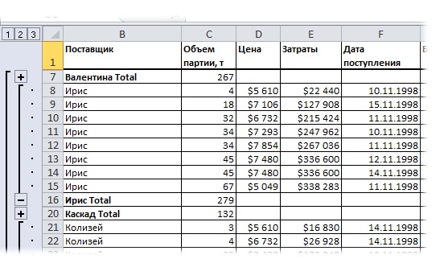

После этого получится строка вроде такой:
Как оставить возможность работать с группировкой/структурой на защищенном листе?
Для многих, наверное, не секрет, что если защитить лист от внесения изменений в ячейки и на листе имеется сгруппированные в структуру данные, то при установке обычной защиты(Рецензирование -Защитить лист) теряется возможность работы с этой структурой. Для тех, кто не совсем понимает, что такое структура(еще её называют группировка): это такие плюсики левее строк/выше столбцов, при нажатии на которые раскрываются скрытые строки/столбцы.

Однако часто бывает необходимо сделать так, чтобы наряду с защитой листа можно было еще и структурой пользоваться. Т.е. чтобы пользователь мог просмотреть все в удобной форме, но не смог ничего изменить. Так как же защитить лист и оставить возможность работы со структурой? Очень просто.
Если вы не знакомы с макросами и VBA, то обязательно пройдите по ссылкам из инструкции ниже. Итак, чтобы разрешить использовать структуру на защищенном листе необходимо:
Sub ProtectShWithOutline() ActiveSheet.EnableOutlining = True ActiveSheet.Protect Contents:=True, Scenarios:=True, UserinterfaceOnly:=True End Sub
|
1 2 3 4 |
ActiveSheet.EnableOutlining = True ActiveSheet.Protect Contents:=True, Scenarios:=True, UserinterfaceOnly:=True |
Код сам устанавливает защиту на лист(не надо перед его выполнением устанавливать защиту вручную!), но при этом разрешает использовать группировку.
Основную роль здесь играет параметр UserInterfaceOnly, который говорит Excel-ю, что коды VBA могут выполнять определенные действия, не снимая защиты методом Unprotect. А второй важный пункт - EnableOutlining = True. Он как раз и включает возможность использования группировки. Как ни странно, но без UserInterfaceOnly он не работает. Поэтому важно применять их оба.
Код выше устанавливает такую защиту только на активный лист книги. Но можно указать лист явно(например установить защиту на лист с именем Лист1 в активной книге):
Sub ProtectShWithOutline() Sheets("Лист1").EnableOutlining = True Sheets("Лист1").Protect Password:="1111", UserInterfaceOnly:=True End Sub
|
1 2 3 4 |
Sheets("Лист1").EnableOutlining = True Sheets("Лист1").Protect Password:="1111", UserInterfaceOnly:=True |
Так же приведенный код можно еще чуть модернизировать и разрешить пользователю помимо изменения ячеек еще и использовать автофильтр:
Sub ProtectShWithOutline() 'на лист "Лист1" поставим защиту и разрешим пользоваться фильтром Sheets("Лист1").EnableOutlining = True 'разрешаем группировку Sheets("Лист1").Protect Password:="1111", AllowFiltering:=True, UserInterfaceOnly:=True End Sub
Можно разрешить и иные действия(выделение незащищенных ячеек, выделение защищенных ячеек, форматирование ячеек, вставку строк, вставку столбцов и т.д. Чуть подробнее про доступные параметры можно узнать в статье Защита листов и ячеек в MS Excel). А как будет выглядеть строка кода с разрешенными параметрами можно узнать, записав макрорекордером установку защиты листа с нужными параметрами:
После этого получится строка вроде такой:
ActiveSheet.Protect DrawingObjects:=True, Contents:=True, Scenarios:=True _ , AllowInsertingColumns:=True, AllowInsertingRows:=True, AllowFiltering:=True
|
1 2 |
ActiveSheet.Protect DrawingObjects:=True, Contents:=True, Scenarios:=True _ , AllowInsertingColumns:=True, AllowInsertingRows:=True, AllowFiltering:=True |
здесь я разрешил использовать автофильтр( AllowFiltering:=True), вставлять строки( AllowInsertingRows:=True) и столбцы( AllowInsertingColumns:=True).Чтобы добавить возможность изменять данные ячеек только через код VBA, останется добавить параметр UserInterfaceOnly:=True и установить EnableOutlining = True:
ActiveSheet.EnableOutlining = True 'разрешаем группировку ActiveSheet.Protect DrawingObjects:=True, Contents:=True, Scenarios:=True _ , AllowInsertingColumns:=True, AllowInsertingRows:=True, AllowFiltering:=True, UserInterfaceOnly:=True
и так же неплохо бы добавить и пароль для снятия защиты, т.к. запись макрорекордером не записывает пароль:
ActiveSheet.EnableOutlining = True ActiveSheet.Protect DrawingObjects:=True, Contents:=True, Scenarios:=True _ , AllowInsertingColumns:=True, AllowInsertingRows:=True, AllowFiltering:=True, UserInterfaceOnly:=True, Password:="1111"
Самая большая ложка дегтя заключается в том, что параметр UserInterfaceOnly сбрасывается сразу после закрытия книги. Т.е. если установить таким образом защиту на лист и закрыть книгу, то при следующем открытии защиты этой уже не будет - останется лишь стандартная защита. А значит группировка работать по прежнему не будет, что ставит под сомнение полезность подобного подхода, потому как обычно такое применяется для других пользователей, которые как правило далеки от макросов и даже слушать не станут, что мы там будем им предлагать выполнить. Поэтому, если необходимо такую защиту видеть постоянно и не только у себя на компьютере, то данный макрос лучше всего прописывать на событие открытия книги(модуль ЭтаКнига(ThisWorkbook)).
Сделать это можно таким кодом:
Private Sub Workbook_Open() Sheets("Лист1").EnableOutlining = True Sheets("Лист1").Protect Password:="1111", UserInterfaceOnly:=True End Sub
|
1 2 3 4 |
Sheets("Лист1").EnableOutlining = True Sheets("Лист1").Protect Password:="1111", UserInterfaceOnly:=True |
Правда куда чаще необходимо устанавливать одинаковую защиту на все листы книги. Сделать это можно кодом ниже, который так же должен быть размещен в модуле ЭтаКнига(ThisWorkbook):
Private Sub Workbook_Open() Dim wsSh As Object For Each wsSh In Me.Sheets ProtectShWithOutline wsSh Next wsSh End Sub Sub ProtectShWithOutline(wsSh As Worksheet) wsSh.Protect Password:="1111", UserInterfaceOnly:=True End Sub
|
1 2 3 4 5 6 7 8 9 |
Sub ProtectShWithOutline(wsSh As Worksheet) |
Плюс во избежание ошибок лучше перед установкой защиты снимать ранее установленную(если она была):
Sub ProtectShWithOutline(wsSh As Worksheet) wsSh.Unrotect "1111" 'снимаем прежнюю защиту wsSh.EnableOutlining = True 'разрешаем группировку wsSh.Protect Password:="1111", UserInterfaceOnly:=True 'защищаем лист с паролем "1111" End Sub
Если же защиту необходимо установить только на конкретные листы, имена которых заранее известны, то можно использовать чуть иной подход - использовать массивы:
Private Sub Workbook_Open() Dim arr, sSh arr = Array("Январь", "Февраль", "Март") For Each sSh in arr ProtectShWithOutline Me.Sheets(sSh) Next End Sub Sub ProtectShWithOutline(wsSh As Worksheet) wsSh.EnableOutlining = True wsSh.Protect Password:="1111", AllowFiltering:=True, UserInterfaceOnly:=True End Sub
Для применения этого кода в своих книгах необходимо будет лишь изменить(добавить, удалить, вписать другие имена) имена листов в этой строке: Array("Январь", "Февраль", "Март")
Примечание: Описанный метод защиты имеет одно существенное ограничение: его невозможно использовать в книге с общим доступом(Рецензирование -Доступ к книге), т.к. при общем доступе существуют ограничения, среди которых и такое, которое запрещает изменять параметры защиты для книги в общем доступе.